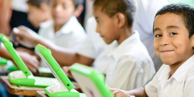

Latin American Agribusiness Development Corporation S.A.
Local Knowledge Focus Flexibility
Special Initiatives
LAAD is aware that we operate in rural areas that have many needs over and beyond financing for agricultural activities. These areas are lacking in basic necessities such as health services, electricity, running water and in some instances, even personal security. Recognizing that one small company cannot help everyone in all locations, LAAD has decided to focus its resources on education.
Education. This is the fundamental corner stone that establishes a foundation for all other efforts to improve living conditions in rural Latin America. With education, new generations of small, traditional farmers may return to their unpaved towns and begin to formulate new and better ways to work, communicate and cooperate with their neighbors, improving life for the entire community. Education not only helps young and energetic minds take advantage of previously-unseen opportunities, but in fact enables them to create these opportunities. Although LAAD recognizes that change through education is a long-term process, we are convinced that it is the most solid way to help rural communities help themselves to a better future. Some of LAAD’s efforts to promote rural education are shown below:
- 50% scholarship granted yearly to four students at the Pan American Agricultural School (Zamorano)
- Grant to “Seeds of Progress Foundation” to purchase computers for elementary children in coffee-growing regions of Nicaragua
- School supplies and backpacks to children of La Cuchilla school in Dominican Republic
LAAD will continue to support educational initiatives in rural Latin America in order to assist in the development of better conditions for small-scale producers in neglected areas.
Digital Seeds
In 2014, LAAD started supporting the Digital Seeds program being carried forward by the Mercon group, one of our close clients in Nicaragua.
READ MOREScholarships to Escuela Agrícola Panamericana (Zamorano)

In 2006, LAAD started a program to grant scholarships to students attending the Escuela Agrícola Panamericana (Zamorano) in Honduras
READ MORE